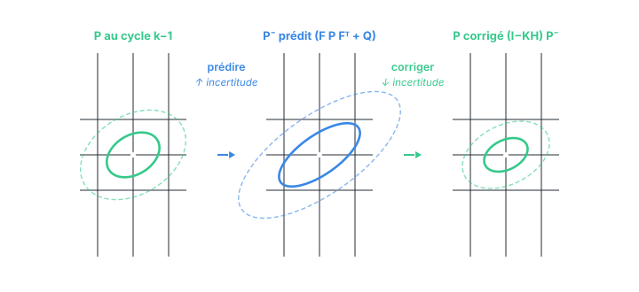

Chapitre 06
La prédiction : propager une gaussienne
Objectifs du chapitre
- Dériver les deux équations de prédiction directement à partir du modèle et de la boîte à outils du chapitre 2.
- Comprendre le « sandwich » F·P·Fᵀ et le rôle du + Q.
- Saisir l'idée maîtresse : prédire, c'est perdre de la certitude — la covariance ne fait que grandir pendant cette étape.
- Introduire les notations a priori (x⁻, P⁻) et a posteriori (x, P).
1. Notations : avant et après la mesure
Chaque cycle du filtre enchaîne deux phases, et l'on distingue soigneusement l'état à ces deux moments. On note avec un exposant moins les grandeurs prédites, avant d'avoir intégré la mesure du cycle (l'a priori) :
- x⁻, P⁻ : état et covariance prédits (a priori) ;
- x, P : état et covariance corrigés (a posteriori), après la mesure.
La prédiction transforme l'a posteriori du cycle précédent (xₖ₋₁, Pₖ₋₁) en a priori du cycle courant (x⁻ₖ, P⁻ₖ). La correction (chapitre 7) transformera ensuite cet a priori en a posteriori (xₖ, Pₖ). Pour alléger, on omet souvent l'indice k quand il n'y a pas d'ambiguïté.
2. Propager la moyenne
L'état évolue selon xₖ = F·xₖ₋₁ + B·uₖ + wₖ. On veut la moyenne de la croyance prédite, c'est-à-dire l'espérance de xₖ sachant les mesures passées. Par linéarité de l'espérance, et puisque le bruit est centré (E[wₖ] = 0) :
La meilleure prédiction de l'état, c'est simplement l'état estimé passé, poussé à travers la dynamique et la commande. Le bruit, centré, ne déplace pas la moyenne — il ne fait qu'élargir l'incertitude, ce que va porter la covariance.
3. Propager la covariance
C'est ici que la boîte à outils du chapitre 2 paie. On a deux effets à combiner : la transformation linéaire par F (règle du sandwich) et l'ajout du bruit de process indépendant (additivité des covariances).
L'erreur d'estimation prédite est e⁻ = xₖ − x⁻. En remplaçant xₖ par la dynamique et x⁻ par F·x + B·u, le terme B·u (déterministe) s'annule :
L'erreur prédite est l'ancienne erreur e transportée par F, plus le bruit frais w. Comme e (erreur passée) et w (bruit du pas courant, blanc) sont indépendants, leurs covariances s'ajoutent, et le terme en F·e se transporte en sandwich :
Les deux équations de la prédiction sont donc :
P⁻ = F·P·Fᵀ + Q
Elles ne contiennent rien de nouveau : ce sont la règle reine du chapitre 2 (sandwich) et l'additivité sous indépendance, appliquées au modèle du chapitre 5. Aucune magie — juste la propagation d'une gaussienne à travers une application affine bruitée.
P⁻ = F·P·Fᵀ + Q, jamais F·P ni F·P·F. Sans la transposée, le produit n'est en général même pas carré, donc pas une covariance. C'est l'erreur numéro un du domaine — on l'a déjà signalée au chapitre 2, on la re-signale ici parce que c'est le moment où elle se commet.
4. Prédire, c'est perdre de la certitude
Regardez P⁻ = F·P·Fᵀ + Q avec des yeux d'ingénieur. Le sandwich F·P·Fᵀ transporte et déforme l'incertitude existante ; le + Q lui ajoute de l'incertitude fraîche. Comme Q est semi-définie positive, la prédiction ne peut que gonfler l'incertitude (au sens des covariances). C'est logique : le temps passe, le modèle vieillit, on sait de moins en moins bien où l'on est. Sans mesure pour recaler, une prédiction laissée seule diverge — c'est la dérive en boucle ouverte du chapitre 1.

L'inclinaison de l'ellipse prédite (fig. 6.1) n'est pas décorative : c'est F qui corrèle les composantes en les propageant. Sur le modèle [[1, dt],[0, 1]], la position future dépend de la vitesse courante, ce qui crée un terme croisé position-vitesse dans P⁻ (on l'a calculé à l'exercice 2 du chapitre 2). Cette corrélation est précisément ce qui permettra à une mesure de position de corriger la vitesse au chapitre suivant.
5. Le cas sans commande
Dans beaucoup d'applications de suivi (poursuite de cible, estimation d'un mobile qu'on ne pilote pas), il n'y a pas de commande connue : u = 0. La prédiction se réduit alors à :
Tout le mouvement réel — y compris les accélérations qu'on ne modélise pas — doit alors être « expliqué » par le seul bruit de process Q. C'est pourquoi, en l'absence de commande, le réglage de Q devient si décisif : c'est le seul endroit où l'on déclare à quel point la cible peut nous surprendre (chapitre 10).
Récapitulatif
- Notations : x⁻, P⁻ = a priori (prédit, avant mesure) ; x, P = a posteriori (corrigé, après mesure).
- Moyenne : x⁻ = F·x + B·u — pousser l'état à travers la dynamique ; le bruit centré ne déplace pas la moyenne.
- Covariance : P⁻ = F·P·Fᵀ + Q — sandwich (transport par F) + additivité (ajout du bruit indépendant Q).
- Prédire = perdre de la certitude : P⁻ ⩾ F·P·Fᵀ, l'ellipse gonfle. Sans correction, dérive.
- F crée des corrélations entre composantes — le lien qui rendra la correction capable d'estimer l'inobservé.